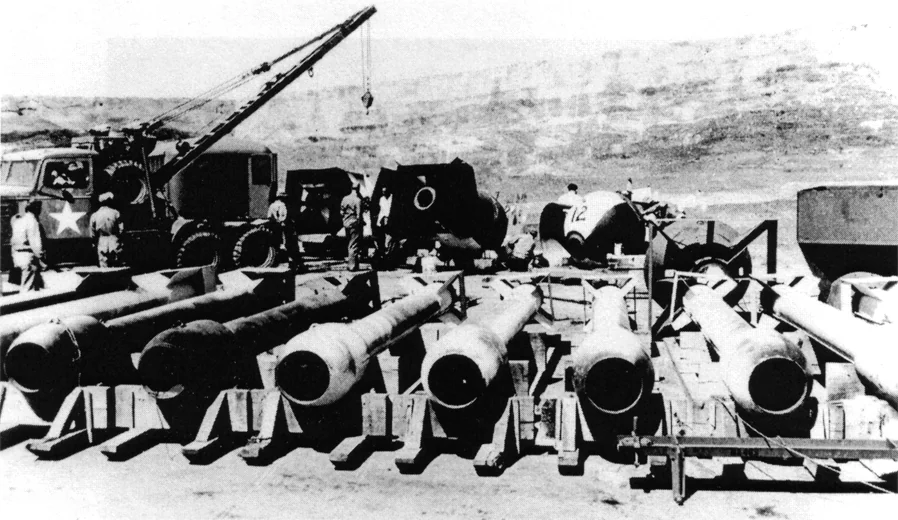
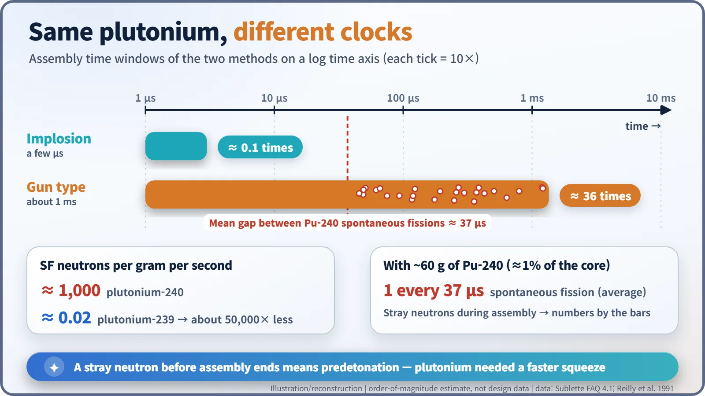
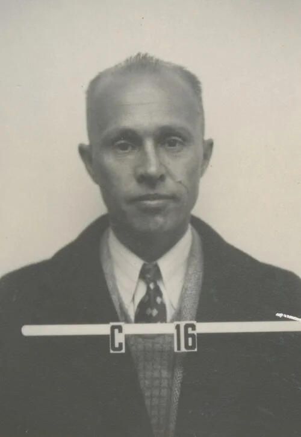
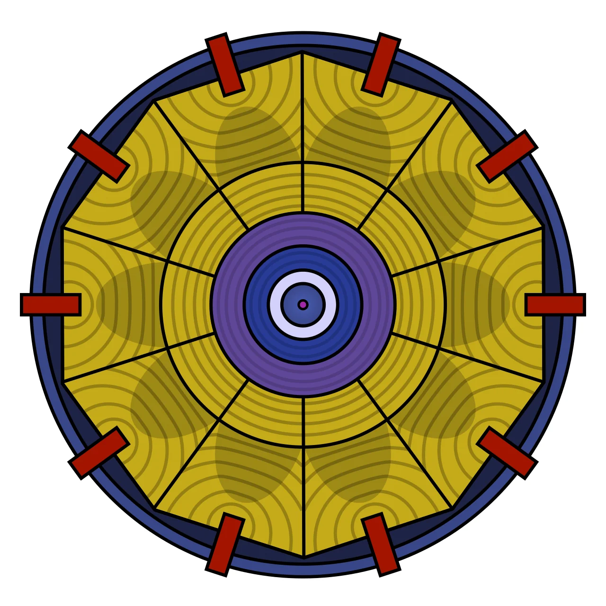
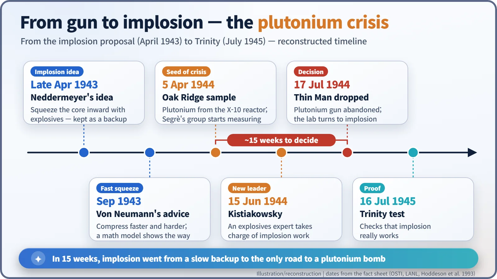

Nuclear History · 108
The Element That Fires Too Soon — The Plutonium Crisis and the Turn to Implosion (1944)
Reactor plutonium split on its own too often for a gun-type bomb, so Los Alamos had to learn to squeeze a core inward within millionths of a second.
In the spring of 1944, the first reactor-made plutonium reached Los Alamos and turned out to split on its own far too often. The culprit, plutonium-240, meant a gun-type plutonium bomb would go off before it was assembled. On 17 July 1944 the "Thin Man" design was abandoned, and the laboratory bet everything on the much harder method of implosion.
An element that would not behave
What if plutonium had behaved as politely as uranium? The story of the atomic bomb might have been much simpler. Until the spring of 1944, Los Alamos was preparing a plutonium bomb called "Thin Man": roughly 5.2 m (17 ft) long, essentially a slender gun barrel wrapped in a bomb casing. Then, on 17 July 1944, it was cancelled before it was ever loaded. The culprit was an uninvited guest hiding inside reactor-made plutonium. [1]

The original plan was a gun
Fissile material sustains a chain reaction on its own once you gather more than a certain amount, the critical mass. So a bomb keeps two sub-critical pieces apart and then slams them together in an instant. The simplest way is a gun-type design: fire one piece down a barrel like a bullet into the other.
For uranium-235 this was good enough. For plutonium, designers expected more stray neutrons, so they calculated that the plutonium "bullet" would need a speed of at least about 3,000 feet per second (roughly 900 m/s), close to the limit of artillery of the day. Hence the long barrel. The physicist Robert Serber borrowed the name from Dashiell Hammett's detective novel The Thin Man. By March 1944, B-29 bombers were already dropping test casings. [1] [2]
A package from Oak Ridge, 5 April 1944
That spring, on 5 April 1944, Los Alamos received its first sample of reactor-produced plutonium, made in the X-10 pile at Oak Ridge, Tennessee. Until then the scientists had worked only with tiny amounts made in cyclotrons (particle accelerators). [3]
A group led by Emilio Segrè (1905–1989) measured how often the sample split all by itself, a process called spontaneous fission. It happened far more often than in cyclotron plutonium. The cause was plutonium-240. Inside a reactor, a plutonium-239 nucleus sometimes swallows one more neutron without splitting and becomes Pu-240, and the longer the fuel stays in the reactor, the more of it builds up. One historical analysis puts the Pu-240 level at about five times that of cyclotron plutonium. [7]
This was exactly the problem Glenn Seaborg (1912–1999) had warned about. The U.S. Department of Energy history credits measurements on the Oak Ridge X-10 material; the Los Alamos history emphasizes Segrè's group. Both describe the same discovery. And because Pu-240 is the same element as Pu-239, no chemical process could remove it. [1] [3]
Why "too soon" is fatal
Spontaneous fission releases neutrons. One gram of Pu-240 emits about 1,000 neutrons per second; one gram of Pu-239 emits about 0.02, a difference of some 50,000 times. If a stray neutron arrives before the two pieces are fully together, the chain reaction starts early. The bomb blows itself apart before it is properly assembled, and the yield collapses. This is called predetonation, and the feeble result a "fizzle".
Think of trying to clap while someone keeps nudging your elbow: the faster your hands meet, the fewer chances they have to interfere. Gun-type assembly takes on the order of a thousandth of a second. Plutonium needed an assembly hundreds of times faster, finished within a few millionths of a second. No gun could do that. [6]

From crumpled pipes to explosive "lenses"
Fortunately there was another road. In late April 1943, the physicist Seth Neddermeyer (1907–1988) had proposed implosion: instead of shooting pieces together, surround a sub-critical ball of plutonium with explosives and squeeze it from all sides. Packed more densely, the same amount of material lets fewer neutrons escape and becomes critical. [5]
At first implosion was treated as a backup. When Neddermeyer wrapped metal pipes in explosive and fired them, the results were lopsided lumps that, in one account, "resembled rocks". In September 1943 the mathematician John von Neumann (1903–1957) visited and urged a faster, more powerful squeeze, backed by a mathematical model. The Harvard explosives chemist George Kistiakowsky (1900–1982) joined the effort and, on 15 June 1944, took charge of implosion work. [1] [7]

The hard part was symmetry. A detonation spreads outward from the point where it starts, but what was needed was a converging shock wave pressing on the whole surface of the ball at once. The answer was the explosive "lens": a combination of fast- and slow-burning explosives that reshapes the blast wave, much as a magnifying glass reshapes light. Members of the British mission, among them James L. Tuck, contributed the idea, and in the finished design detonations started at 32 points arranged like the panels of a football. [4]

In a 1982 interview with the historian Richard Rhodes, Kistiakowsky passed the credit back: "the real invention should be given full credit to [Seth] Neddermeyer." [4]
17 July 1944: turning the whole lab around
At a meeting on 17 July 1944, the plutonium gun was judged impracticable, about 15 weeks after the Oak Ridge sample arrived. Gun work continued only for the uranium bomb; plutonium's future now rested entirely on implosion.
That summer Robert Oppenheimer reorganized the laboratory: Robert Bacher's G Division took bomb physics and Kistiakowsky's X Division took explosives. On 7 August, General Leslie Groves gave Army Chief of Staff George Marshall a new schedule: a uranium gun bomb by 1 August 1945, and smaller implosion weapons in the second quarter of 1945 if experiments succeeded. [1]

A bomb nobody could trust without a test
Implosion was so complex that it had to be tried once for real. That test was Trinity, in the New Mexico desert, on 16 July 1945. Even then the risk was not zero: according to a declassified Oppenheimer memo as cited by later analysts, the chance of predetonation for the implosion bomb was put at about 12%. [6]
The lesson outlived the war. The same element can behave very differently depending on how it was made, because its isotopic make-up changes everything. Today, the line between "weapons-grade" and "reactor-grade" plutonium is drawn by exactly that: the share of plutonium-240.